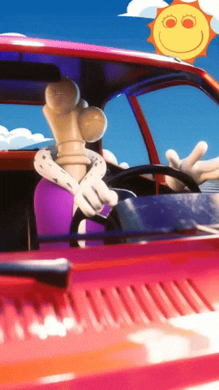

~ Acerca de ~
Este sitio ha sido 100% desarrollado sin ayuda de Inteligencia Artificial Generativa.
El objetivo del sitio es demostrar las habilidades aprendidas a lo largo de la materia de Aplicaciones web por parte de la carrera de Ingeniería de software. De momento solo se ha utilizado herramientas de HTML y CSS.
El código (las etiquetas y estilos en este caso) es totalmente abierto y con gusto puedo compartir como hice cualquiera de las secciones del sitio :).
